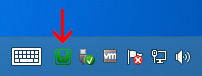
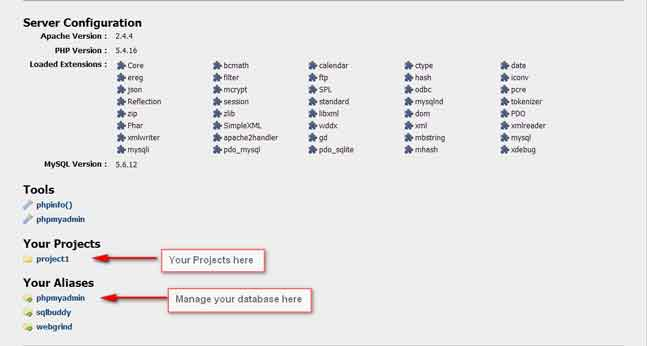
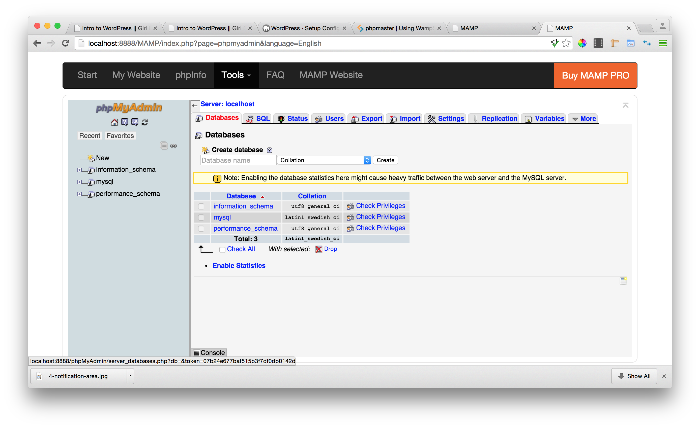

WordPress 101
With Wylesha Rachell & Matt Stills
wfield1@gmail • wylesharachell.com || wfield1@gmail • wylesharachell.com
Slides located at: Slides Link
Set up your computer for today
If you haven't yet, please download Sublime Text http://www.sublimetext.com/3
We recommend that you install Google Chrome,
if you haven't already.
Welcome!
Girl Develop It is here to provide affordable and accessible programs to learn software through mentorship and hands-on instruction.
Some "rules"
- We are here for you!
- Every question is important
- Help each other
- Have fun
Class Agenda
- Week 1 : Introductions, Wordpres Introduction, Local Build
- Week 2 : Intro to Wordpress Dashboard, Settings, Pages, Posts
- Week 3 : Intro to Themes, Plugins, Widgets
- Week 4 : Launch a Live Site
Meet Your Instructor
Wylesha Rachell
- I am a Front-End Engineer for NBA Team Sites at Turner Broadcasting. I discovered my love for development while creating Myspace pages for friends during college at LSU.
- Over the course of the years, I became experienced with several languages including HTML, CSS, Javascript, PHP, MySQL & so much more.
- I’m curious, and I enjoy work that challenges me to learn something new and stretch in a different direction. I do my best to stay on top of changes in the industry and I hope I can teach you all the same!
Meet Your TA
Matt Stills
- Matt has been using computers since he could reach the keyboard. His first website debuted on the internet circa 1999. Since then, he has created many others for himself, family, friends, and employers.
- Since graduating from Georgia Tech, Matt has been doing web development professionally the last 7 years. Most recently, he has been working as a front and backend developer at Turner Broadcasting on the NCAA.com website and March Madness Live desktop experience.
- Matt has a deep interest in all things related to computer technology whether it is learning a new language, playing with a new framework, or having a spirited debate about the best way to get something done.
Let's meet the class!
Tell us your name and a fun fact about yourself
Why your here?
Have you used WordPress before?
WordPress
What is WordPress - Nuts & Bolts
Local Build
Questions
What is WordPress?

- An open source blogging tool and content management system.
- WordPress was created in 2003.
- Powers 20% of the web & 66% of CMS sites.
- Constantly being improved. Free.
Source: W3techs.com
Why do we use WordPress?
- Speed: Build a site quickly with little or no budget.
- Simplicity: No need to touch code unless you want to
- Collaborate: Multiple users on one WordPress site
- Collect feedback: Internally or through public comments
- Centralize: Treat it like a news center for all your social media feeds.
Examples
WordPress.com
vs.
WordPress.org
WordPress.com
- WordPress.com is "free*"
- Similar to Blogger, Tumblr, TypePad etc.
- They host your files.
- By default your domain name will be: YourName.WordPress.com
- Customization options are extremely limited.
- Your site will have ads, until you pay to remove them.
- Your blog will be part of a built-in network.
- *Many premium features. $$
Self Hosted : WordPress.org
- WordPress is free! Download at WordPress.org
- To run this software, the files need to be hosted online.
- You pay for domain and hosting
- The sky's the limit with your self-hosted WP site!
-
We'll focus on self-hosted, wordpress.org sites in our class today.
Many features are available on both platforms.
Hosting
Web hosting: A home for the files that make up your website.
About $10-15/month
There are really a lot of good hosts to choose from.
Read reviews: http://www.whoishostingthis.com/compare/wordpress/Some of our favorites are:
Domain
- You purchase your domain name.
- Costs about $10-15/year
- Domain name gives an address to your files.
- You'll need to have one setup with a domain by end of class. =)
Create a local build in 4 steps.
- Set up a local server
- Download Wordpress
- Editing 4 lines in wp-config.php
- Loading your site
STUCK? Raise your hand! DONE? Take a break!
Setting up a local server
Local installations live on your computer, not on the web.-
MAMP(Mac) - mamp.info
- After installation, open the MAMP application and select Start Server
- Your files will be located @ /Applications/MAMP/htcdocs
- WAMP (Window) - wampserver.com
- During the installation wizard keep all the default settings.
- Step by step instructions
- After installation, open the WAMP icon and select localhost 
- Your files will be located @ C:/wamp/www, unless changed during installation
Wordpress
- Download the latest version of WordPress from WordPress.org
- Move the wordpress folder over to your local server
- MAMP: /Applications/MAMP/htcdocs
- WAMP: C:/wamp/www
Create a MySQL database
This is how you store all your information posted on the website- MAMP
- Click Open WebStart Page in the Application
- Click phpMyAdmin under MySQL
Create a MySQL database
This is how you store all your information posted on the website- WAMP
- Click the WAMP icon and select localhost
- Select phpMyAdmin 
phpMyAdmin
This is the GUI used to manage all your database informationEnter a database name under create database and select create
Wordpress Config
Here we tell Wordpress were to get its data. Edit and save wp-config-sample.php as wp-config.php- MAMP : /Applications/MAMP/htcdocs/wordpress/wp-config.php
- WAMP : C:/wamp/www/wp-config.php
/** The name of the database for WordPress */
define('DB_NAME', 'database_name_here');
/** MySQL database username */
define('DB_USER', 'root');
/** MySQL database password */
define('DB_PASSWORD', 'root'); //WAMP => define('DB_PASSWORD', '');
/** MySQL hostname */
define('DB_HOST', 'localhost');
Load Wordpress
MAMP: http://localhost:8888/wordpress
WAMP: http://localhost/wordpress
Follow the prompts and done!